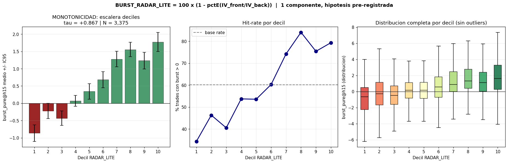
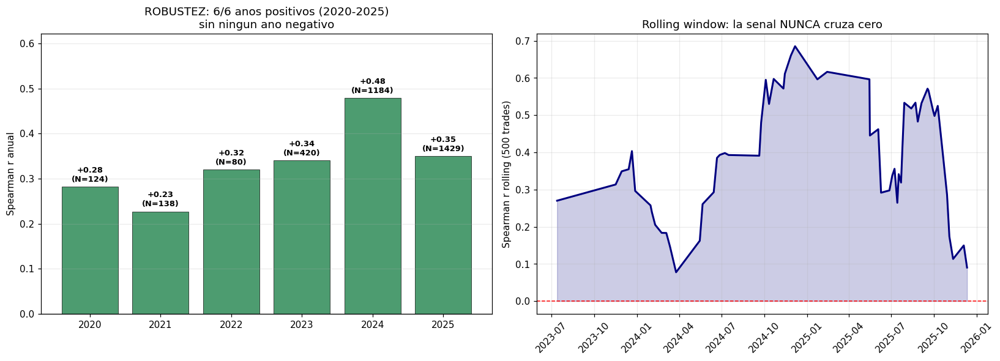
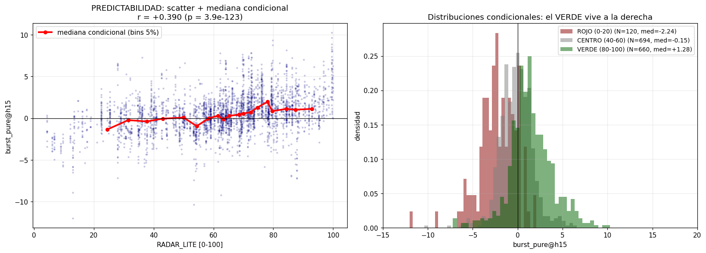
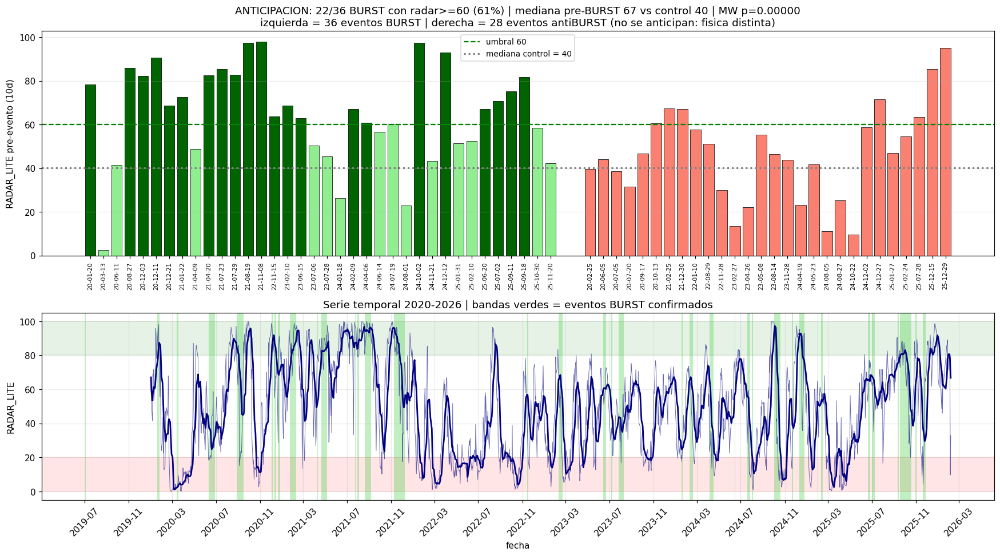
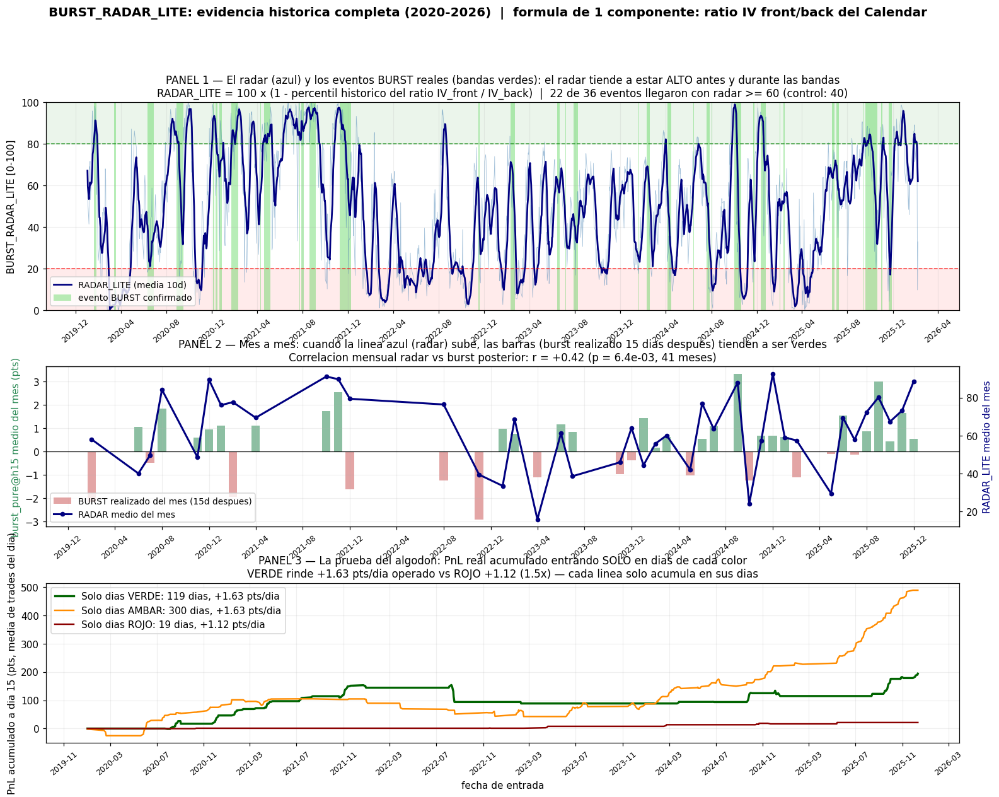
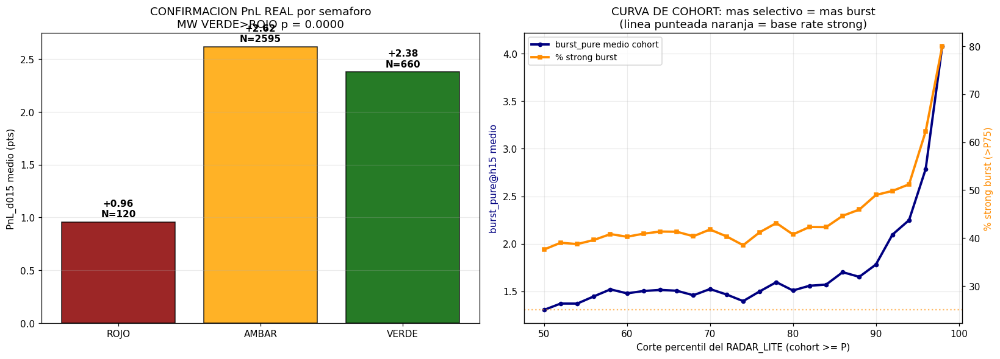

FORMULA (desgranada paso a paso):
Paso 1 · bandas: cada dia, snapshot 10:30 ET de la cadena SPX. Se toman las expiraciones de CALLS
con DTE 25-35 (zona de la pata corta del calendar Elite) y DTE 38-52 (zona de la pata larga).
De cada expiracion se lee su iv_25 (IV al delta 25).
Nota sensor: CALLS delta-25 es el instrumento de MEDIDA, no una restriccion del universo. La senal de
term structure es casi identica midiendola en PUTS o en ATM (rho 0.85-0.94 entre variantes; r vs burst: calls25
+0.390, calls ATM +0.384, puts ATM +0.334, puts25 +0.319) y el radar predice el burst de calendars PUT (r=+0.42)
y CALL (r=+0.36) por igual. La variante ATM coincide con los deltas tipicos de los calendars Elite (~45-55):
da la misma lectura; delta-25 quedo como canonica por ser la congelada en el estudio.
Paso 2 · agregacion robusta: IV_front = media de las iv_25 de la banda corta;
IV_back = media de la banda larga. Filtro de calidad: se descartan expiraciones cuya iv_25 se desvie
mas de 2x (o menos de 0.5x) de la mediana de su banda ese dia (protege de quotes basura en festivos/dias parciales).
Paso 3 · ratio: CAL_RATIO = IV_front / IV_back. Es la relatividad de precios entre las
dos patas del calendar expresada en volatilidad. CAL_RATIO < 1 = contango (front mas barata que back).
Paso 4 · percentil expanding: pctE(t) = fraccion de los dias HISTORICOS (solo < t,
warmup 252 dias, cero lookahead) con CAL_RATIO ≤ al de hoy.
Paso 5 · score: BURST_RADAR = 100 x (1 - pctE). Se invierte porque ratio BAJO
(contango historicamente extremo) = regimen en calma = pro-BURST (ver LOGICA abajo). Semaforo: VERDE ≥80,
AMBAR 20-80, ROJO ≤20.
LOGICA (regimen de volatilidad, NO roll-down): en un calendar vendes la pata corta y
compras la larga, quedando net LONG vega (la larga pesa mas). La intuicion del roll-down — que
la pata corta se "derrite" bajando por la curva — NO se sostiene en los datos: medida con la superficie 3D, la
IV de la pata corta es casi sticky (apenas se mueve, no se desliza por la curva) y correlaciona
NEGATIVO (-0.27) con su propia prediccion de roll-down. El BURST lo carga la pata LARGA: explica el
72% de su varianza (la corta, 0.5%). El mecanismo real es de REGIMEN: en backwardation (ratio alto,
tras un susto de mercado) toda la superficie de IV revierte a la baja y el calendar net-long-vega se come un
vol-crush en la pata larga (burst muy negativo); en contango (ratio bajo, mercado en calma) esa
caida no ocurre y el burst se preserva. El radar compra calma para que la pata larga no sufra el vol-crush,
no para cosechar un carry de la pata corta. La analogia con el carry de futuros VIX NO aplica: la IV
de una opcion no converge a nada fijo y la front es sticky. Evidencia: reconstruido pata a pata, el burst
realizado se reproduce con r=+0.80; el radar lo predice (r=+0.39, 6/6 anos) y su momentum es positivo (+0.26) —
el regimen de contango tiende a persistir a favor de la estructura.
NATURALEZA: senal de REGIMEN, no de trade. El radar produce UN valor por dia, comun a TODOS
los calendars que se abran ese dia (no distingue strike ni right). Su gemelo trade-level es
BURST_SCORE_PURE (ex-post, rango [-1,+1]): mide el burst REALIZADO de cada trade individual
(burst_pure = TXSPOT - (TX_M100 - TX000_M100)). Relacion verificada entre ambos: r=+0.39 trade-level,
r=+0.39 day-level, 6/6 anos; los TOP-200 trades por burst realizado entraron con radar medio 75.5 vs 46.4 los BOT-200.
Grafico + panel = regimen DIARIO a hoy (ultima fecha de mercado en el surface store 10:30).
Tablas de abajo = backtest frozen (estudio 2026-06-10, Calendar Elite V1, 3,375 trades 2020-2025).
Que es y como usarlo
- VERDE (≥80): viento de cola IV probable. El componente burst aporta de media +1.15 pts/dia operado (vs +0.26 en AMBAR). La probabilidad de strong burst se multiplica.
- ROJO (≤20): la volatilidad RESTA (-2.13 pts/dia de componente burst). Zona de no-entrada o tamano reducido.
- Hipotesis pre-registrada: 1 solo componente (sin mineria de features). Audit anti-overfit dedicado: el composite de 8 alternativo fue DESCARTADO por sobre-diseno; esta version parsimoniosa lo iguala con menos riesgo.
Lo que NO promete (seccion de honestidad, abajo): VERDE no implica mas PnL total que un dia normal; el radar predice el componente IV (burst), no el PnL completo (que incluye camino del SPX y theta). Tampoco anticipa los periodos antiBURST (fisica distinta) ni predice la direccion del SPX.
Seccion A · Validacion APR (11/11 PASS)
A · APR Layer A+B+C · estudio 2026-06-10
Bateria completa de robustez
B1 es la clave: partial_r +0.31 controlando SPX_Z50, BB_Width, GEX, HV20 e IV nivel.
El radar NO es un proxy del VIX ni del regimen conocido - es senal nueva de la geometria de la superficie.
Seccion B · Monotonia y robustez (frozen)
B1 · deciles
Escalera de deciles + LOYO


B2 · predictabilidad
Scatter + distribuciones condicionales

Seccion C · Anticipacion de eventos BURST
C · event-study
22 de 36 eventos BURST anticipados


Seccion D · Honestidad (lo que NO promete)
D · day-level honesto
El matiz que hay que conocer
Midiendo por dia operado (un voto por dia, no por trade), el radar predice el
componente burst (r=+0.39, p=4e-17) pero el PnL total por dia apenas
distingue VERDE de AMBAR (r=+0.10): el camino del SPX y el theta pesan tanto como el viento IV.
- Uso correcto: detector de viento IV + filtro de no-entrada en ROJO.
- NO es un boton de "ganar mas en VERDE": el PnL total no lo confirma a nivel dia.
- Los periodos antiBURST (deflacion de IV que mata calendars) NO se anticipan con este radar.
